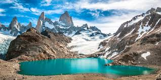
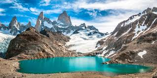

Patagonia, spanning southern Chile and Argentina, is a land of dramatic mountains, glaciers, and windswept plains. Its raw beauty attracts hikers, nature enthusiasts, and anyone seeking unforgettable adventures.
 
